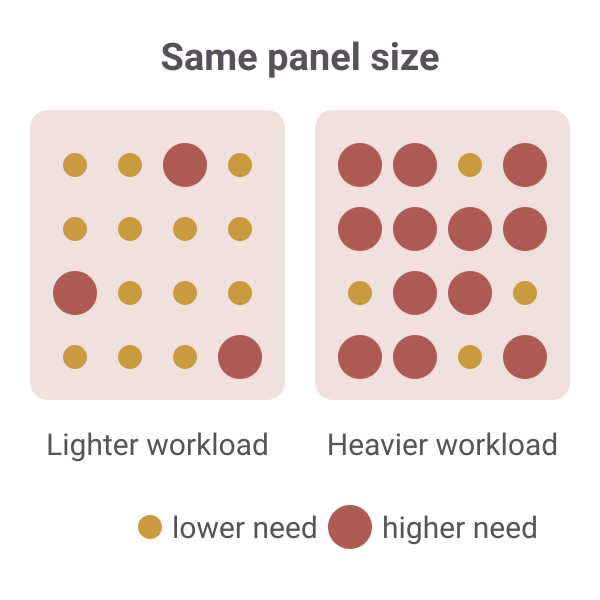
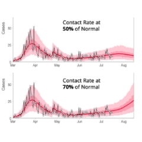
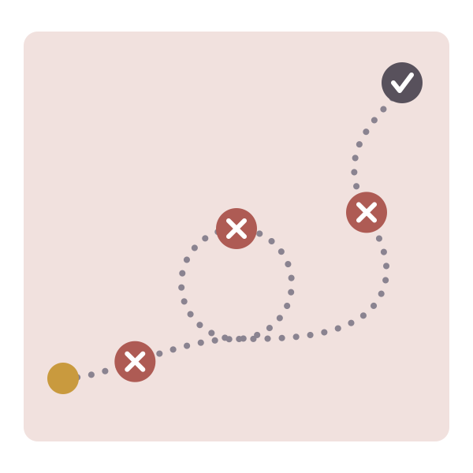
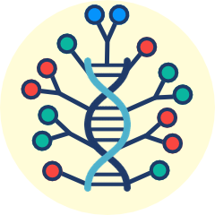
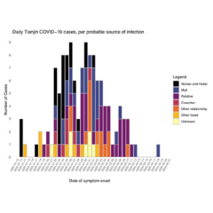
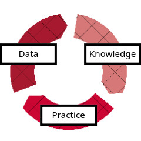

Working with Vancouver Coastal Health to improve identification of people experiencing homelessness using machine learning and inform supported housing planning and allocation with simulation modelling.

Community care
Primary care panel sizes
Evaluating panel size sustainability in various primary care settings, including care for marginalized and Indigenous populations. In partnership with the Squamish Nation’s Kal’númet Primary Care Clinic, co-developing culturally-appropriate panel alternatives.

Epi models
BC COVID-19 modelling
Modelling to support response to the COVID-19 pandemic in British Columbia, including population-level forecasts, epidemiological estimates, and evaluation of interventions such as physical distancing. [1][2][3][4][5]

Community careUrban health
Community-based wound care strategies
Mapping the journeys of patients experiencing multiple barriers to wound care in Vancouver, and using simulation to evaluate interventions that improve access and outcomes and reduce costs.

Epi models
Genomic epidemiology and disease transmission
Using pathogen genomic data to reconstruct transmission networks, understand outbreak dynamics, and design interventions, including for COVID-19, tuberculosis and influenza. [1][2][3][4][5]

Epi models
Infectious disease - who and how
Developing modelling and statistical methods that help us understand how, when and among whom infectious diseases are spreading. [1][2][3][4]

Other
Implementation of Embedded Research initiatives
Studying the implementation of embedded research initiatives, as an enabler of learning health system environments